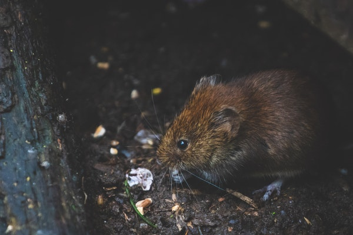
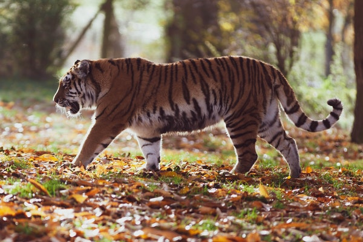
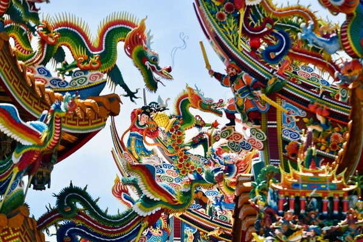
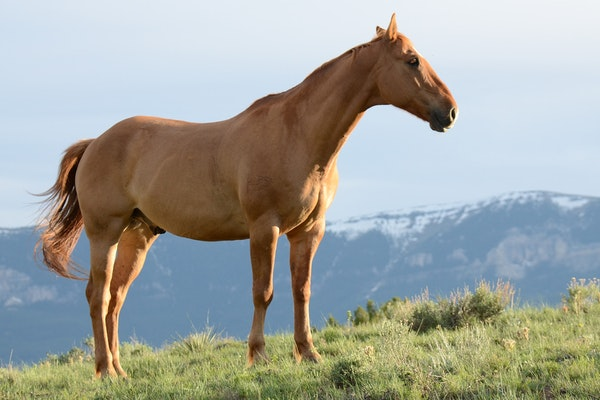
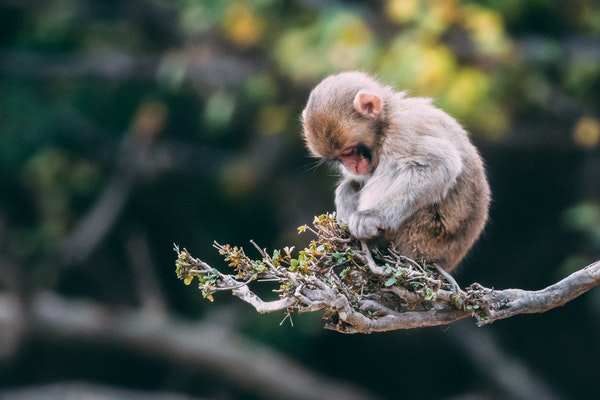
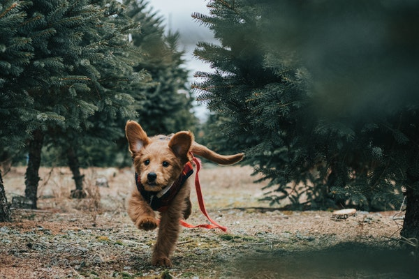
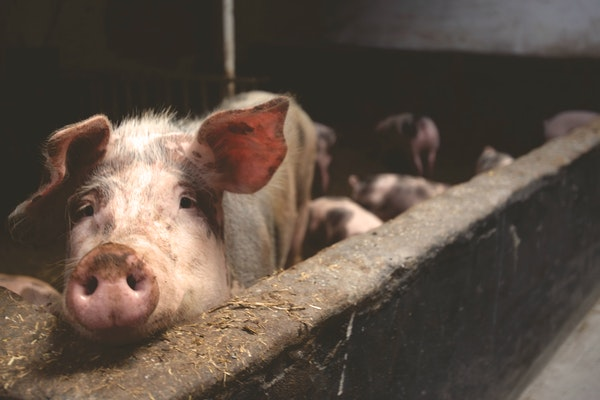

"A horoszkóp nem jóslat, nem prognosztizálja, hogy mi fog történni, csak rámutat a lehetőségekre."
Add meg születési dátumod,
hogy megtudd, mi a kínai horoszkópod
Patkány
A Patkány a horoszkóp jegyek közül az egyik legkiismerhetetlenebb személyiség. Kettősség jellemzi, hiszen néhol könnyeden elbeszélget másokkal, bizonyos helyzetekben viszont a megfontoltság és a racionalitás árad belőle. Társasági ember, aki szereti a mozgalmasságot, nem bír egy helyben megülni. Fizikailag és szellemileg is aktív, általában jók a megérzései.
Bivaly
Legbelül vágyik arra, hogy megdicsérjék az elvégzett feladatért. Nem feltétlenül vágyik állandóan a középpontba, de szereti, amikor elismerik a kitartó munkáját. A szerelemben gondoskodó és igyekszik kielégíteni a párja igényeit. A kényelem és az állandóság a párkapcsolatok terén is fontos számára.
Tigris
Képes felépíteni egy stratégiát, azonban nehezen változtat az előre felállított elképzelésein. Rutinból, az általa megszokott módon igyekszik a problémákat megoldani, még akkor is, ha nem igazán halad előre a feladatokkal. A makacssága miatt időbe telhet, amíg felismeri, hogy szükséges lenne a változtatás.
Nyúl

A horoszkóp jegyek közül a Nyúl kerüli leginkább konfliktusokat. Barátságos és társaságkedvelő személy, aki nagyszerűen képes felmérni a környezetét. Mások véleménye ugyanakkor befolyásolhatja, szeretne megfelelni a külvilágnak. Ezt azért teszi, hogy elkerülje a lehetséges összeütközéseket.
sárkány
A kitartás mellett olykor a türelmetlenség is jellemzi. Rengeteg ötlete van, amelyek eltérhetnek az átlagtól és ezeket szinte azonnal szeretné megvalósítani. A csapongás jellemző lehet rá az élet különböző területein, egészen addig, amíg meg nem találja a számításait. Amikor úgy érzi, hogy rálelt arra, amit keresett lojális és megingathatatlan lesz.
Kígyó

Néha jellemző lehet rá a halogatás és a lustaság. Amikor viszont szükség van a cselekvésre és a segítségre, számíthatnak rá. Nagy mentális erővel rendelkezik, bármi is a célja, képes érte küzdeni. A társával szemben is figyelmes és odaadó, olykor viszont hirtelen és temperamentumos.
Ló
Hajlamos lehet túl intenzíven élni az életet, nagy energiákkal rendelkezik. Azonban az ő tartalékai sem kifogyhatatlanok, e miatt időről-időre jobb, ha lassít a tempón. Legbelül viszont érzékeny, a külvilágból érkező ingerek gyorsan megérintik. A lelki világa változékony és ingatag lehet.
Kecske

Szereti a művészeteket, a természetet és a nyugalmas környezetet maga körül. Békére és harmóniára vágyik, ha teheti elkerüli a zűrös szituációkat. Az önbizalmának megszilárdítása kulcsfontosságú lehet. Jó, ha valaki biztatja őt és ezzel erősíti a magabiztosságát.
Majom
Nem jellemző rá, hogy sokáig egy helyben maradna, lételeme a mozgás. Mégis szereti az állandóságot az életében, a biztos pontot, ahonnan újra elindulhat a felfedező útjára. A szerelemben is őszinte és szókimondó, nem jellemző rá, hogy szépítené a dolgokat. Nyíltan és egyenesen megmondja, ha zavarja valami.
Kakas

A horoszkóp jegyek közül talán a Kakasok vágynak a leginkább arra, hogy megmutathassák képességeiket a világnak. Az élet valamely területén különlegeset szeretnének alkotni. Nagyon ad a külsőségekre, szereti az elegáns ruhákat és a minőségi dolgokat. Stílusa is udvarias, mindenkivel jól el tud beszélgetni, ugyanakkor ő is elvárja a tiszteletet a beszélgetőpartnerétől.
Kutya
A változásokat nem igazán kedveli, inkább a megszokott dolgokat részesíti előnyben. Amikor egy új helyzettel találkozik és nem boldogul vele, inkább a probléma megfejtése nélkül otthagyja, és visszatér a jól bejáratott megoldásokhoz. Sokáig türelmes, amikor viszont kihozzák a sodrából hirtelen robbanhat, ez csodálkozást és megdöbbenést válthat ki a környezetéből.
Disznó
Fontosak számára a gyökerek, a család, a párkapcsolat és a hozzá közel álló emberekhez is ragaszkodhat. Képes a vezetésre, ambiciózus, de makacs is tud lenni. Arra érdemes figyelnie, hogy ne mindig ragaszkodjon foggal-körömmel a saját nézeteihez. Vannak helyzetek, amikor érdemes meghallgatnia mások tanácsait.